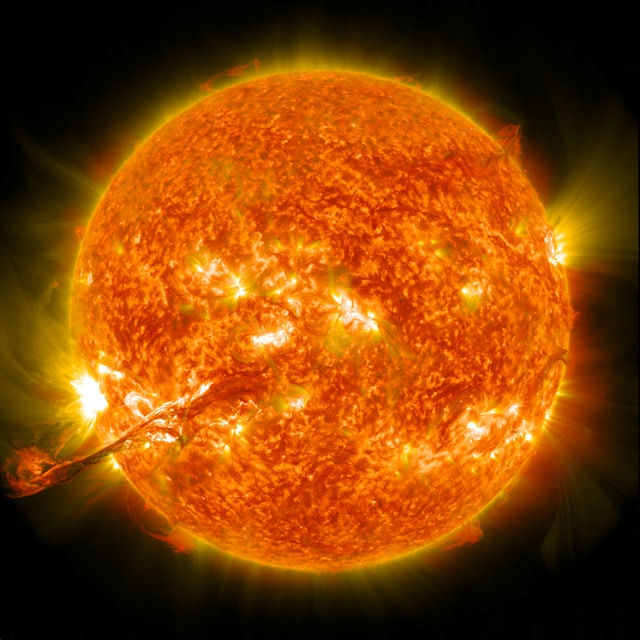
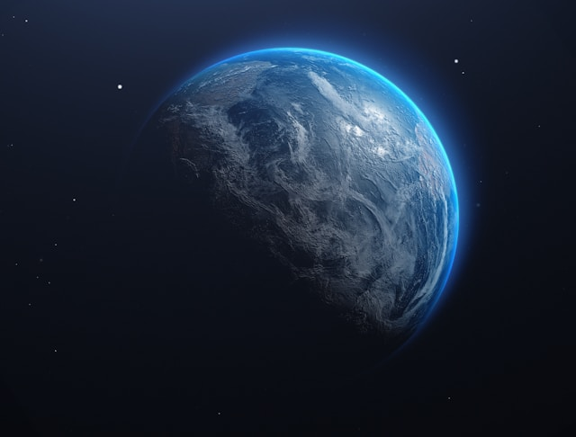
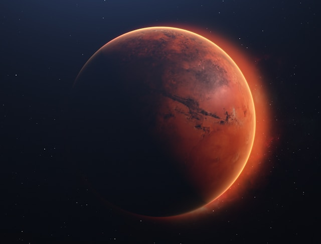
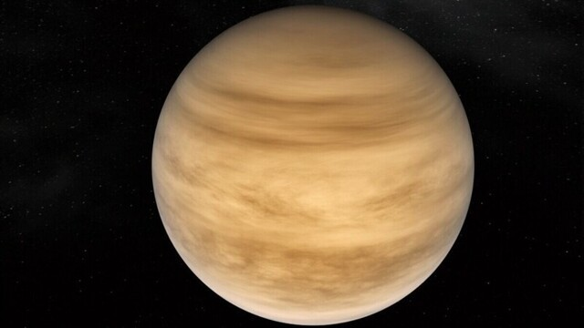

Скоро здесь будет космос
Солнце
Солнце (астр. ☉) — единственная звезда Солнечной системы. Вокруг Солнца обращаются другие объекты этой системы: планеты и их спутники, карликовые планеты и их спутники, астероиды, метеороиды, кометы и космическая пыль

Земля
Земля — третья по удалённости от Солнца планета Солнечной системы, крупнейшая из планет земной группы, в которую входят также Меркурий, Венера и Марс. Это единственная планета, на которой, согласно современным научным представлениям, есть жизнь.

Марс
Марс — четвёртая по удалённости от Солнца и седьмая по размеру планета Солнечной системы. Названа в честь Марса — древнеримского бога войны. Иногда Марс называют «красной планетой» из-за красноватого оттенка поверхности, придаваемого ей минералом маггемитом — γ-оксидом железа(III).

Венера
Венера — вторая по удалённости от Солнца и шестая по размеру планета Солнечной системы, наряду с Меркурием, Землёй и Марсом принадлежащая к семейству планет земной группы. Названа в честь древнеримской богини любви Венеры.

Чёрная дыра
Это объект с такой сильной гравитацией, что даже свет не может вырваться. В центре нашей галактики есть такая дыра — Стрелец А*.